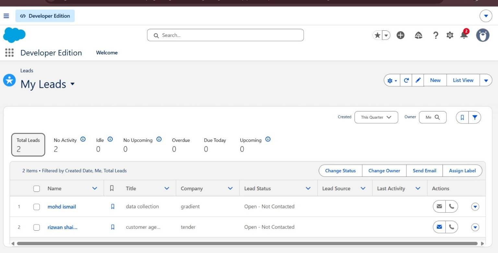
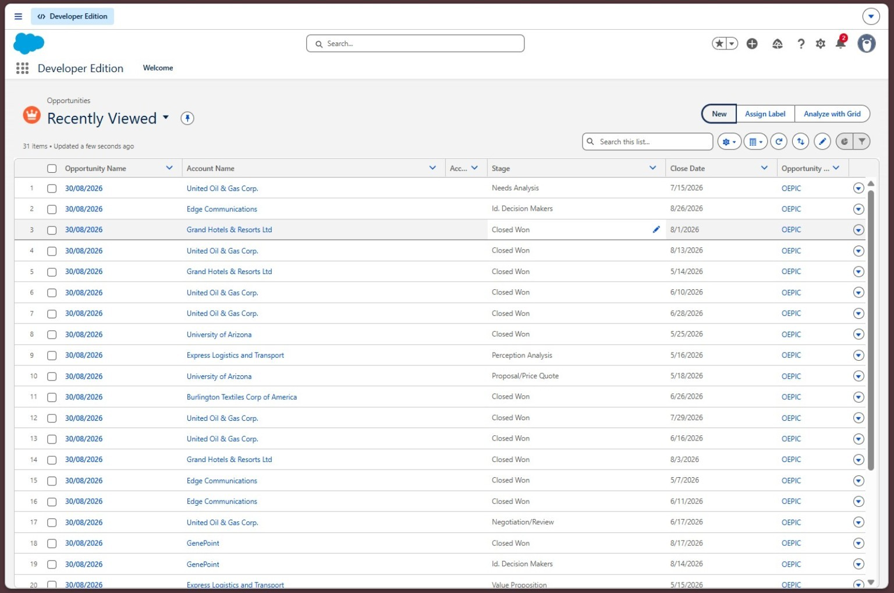
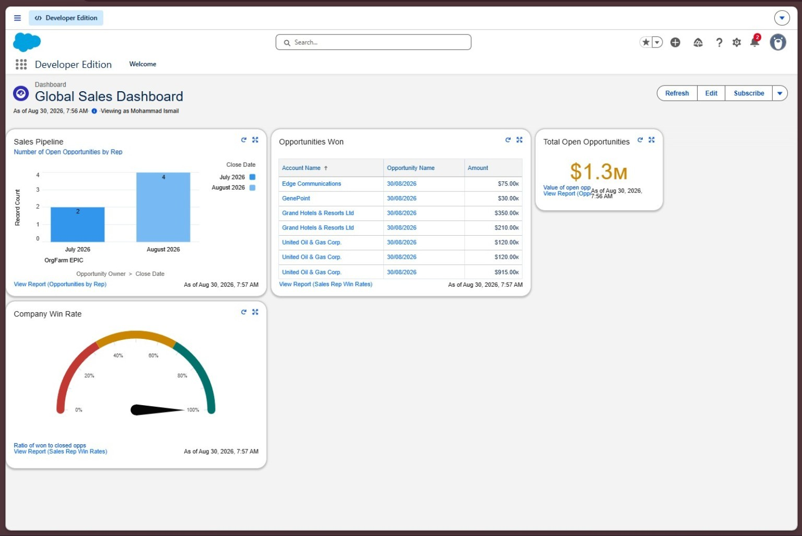
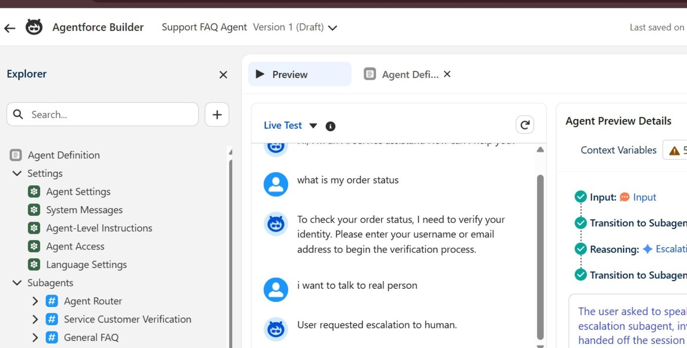
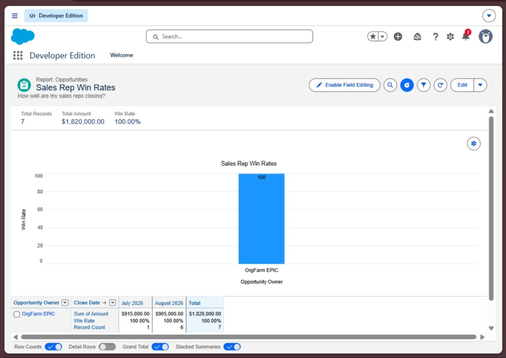
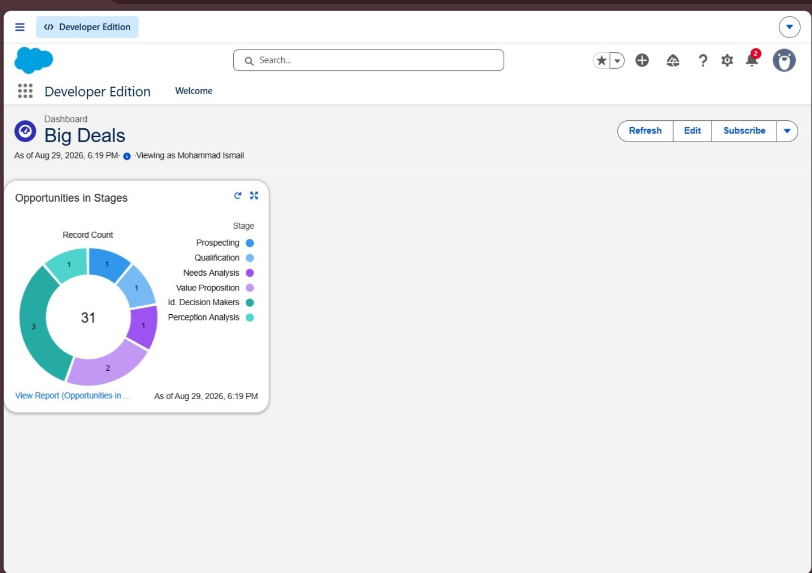
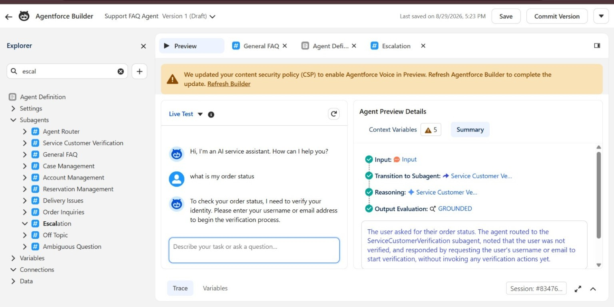

●
CURRENT
Data Collection Specialist — Gradient
Current data-operations role supporting structured data collection and sports analytics.
I'm Mohd Ismail, a Salesforce-focused CRM builder with a background in data operations. Explore my hands-on Developer Edition work across leads, opportunities, reports, dashboards and Agentforce.
Open any project to see the evidence, screenshots and what I worked on.

Completed
Completed
Completed
Completed
Completed
Completed Completed
CompletedMy professional background gives the Salesforce work a practical data-operations foundation.
Current data-operations role supporting structured data collection and sports analytics.
Experience working with structured sports and performance data, match video, team operations.
Screenshots from the Salesforce Developer Edition work. Figures are demo-org data, not claimed as live client work.
The evidence shows a router, verification and multiple service subagents, plus live Agentforce integration within Salesforce.

Agent Builder — routing and service subagents"I designed the agent around intent routing. For sensitive requests such as order status, the flow asks for identity verification before continuing. Supported FAQs are answered directly, and complex requests are escalated to a human agent. The design teaches me how to balance AI efficiency with customer trust and data security."
Design scenarios are clearly separated from portfolio projects. These are hypothetical responses to typical interview questions.
Design a record-triggered Flow to route inbound leads by region or tier, notify the assigned rep and update status. Consider auto-assignment logic, field validation, and error handling for unmatched records.
Design a security model where a Sales team sees only their own records, but managers see their team's records. Use Roles, OWD, sharing rules and Permission Sets. Document least-privilege principles.
Build a high-level dashboard showing pipeline health, win rates by rep, and revenue by quarter. Use roll-up summaries, conditional formatting and drill-down reporting to guide decision-making.
My Trailhead snapshot shows Mountain level progress, Agentblazer Champion status and active learning momentum.
My Trailhead profile currently shows Agentblazer Champion status and an active 2-week learning streak. I'm focused on AI, automation, and advanced Salesforce administration.
My learning path combines Salesforce Administration fundamentals, CRM configuration, automation, analytics and sports data operations.
Core CRM configuration, users, security, data, reports, dashboards and platform essentials.
Record-triggered Flows, screen flows, approvals, and business process logic across objects.
Reports, dashboards, report builder, chart design, and executive visibility.
Football analytics, player scouting, match data and sports CRM operations.
Based in a flexible location and open to remote, hybrid or on-site Salesforce roles across geographies.
I'm Mohd Ismail, a Salesforce-focused CRM builder with a background in data operations and sports analytics. I design and build Salesforce solutions that are clean, structured and business-focused. My portfolio combines football scouting operations, sales CRM, Agentforce AI workflows and hands-on admin configuration.
Open to Salesforce Admin / CRM / Salesforce ecosystem opportunities. Reach out via LinkedIn or email.